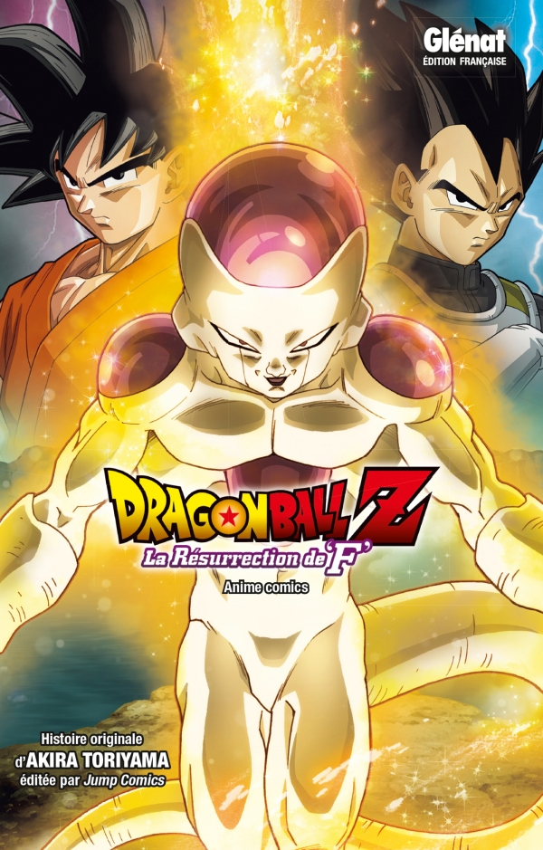

Freezer, le cruel tyran de la galaxie, revient à la vie grâce aux Dragon Balls. II n'a qu'une idée en tête : se venger des Super Saiyans qui l'ont envoyé en enfer. ll entame donc un rude entraînement dans le but de devenir encore plus fort, puis se met en route vers la Terre. Goku et Vegeta vont devoir faire face à l'ennemi le plus retors de tous les temps. Mais quel est ce nouveau pouvoir que Freezer vient d'acquérir ? La Terre est-elle condamnée pour de bon ?!
Présentation des personnages
Ch. 01 : Le retour de Freezer, le tyran de la galaxie
Ch. 02 : Le rassemblement des guerriers 2!
Ch. 03 : L'armée de Freezer à la conquête de la terre
Ch. 04 : Le stade super saiyan de l'état super saiyan divin
Ch. 05 : Confrontation contre golden Freezer
A propos du Dieu de la destruction et du super saiyan divin
Message de maître Akira Toriyama